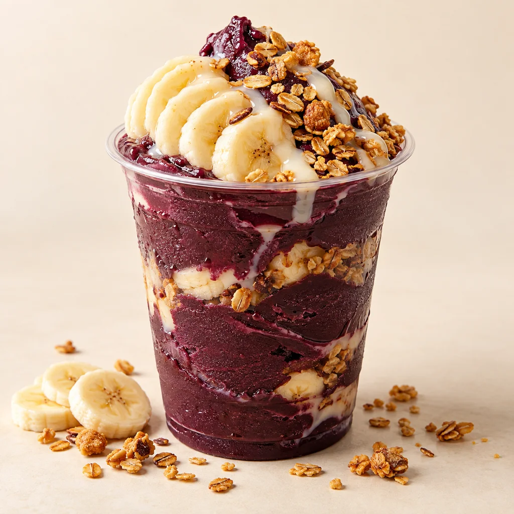
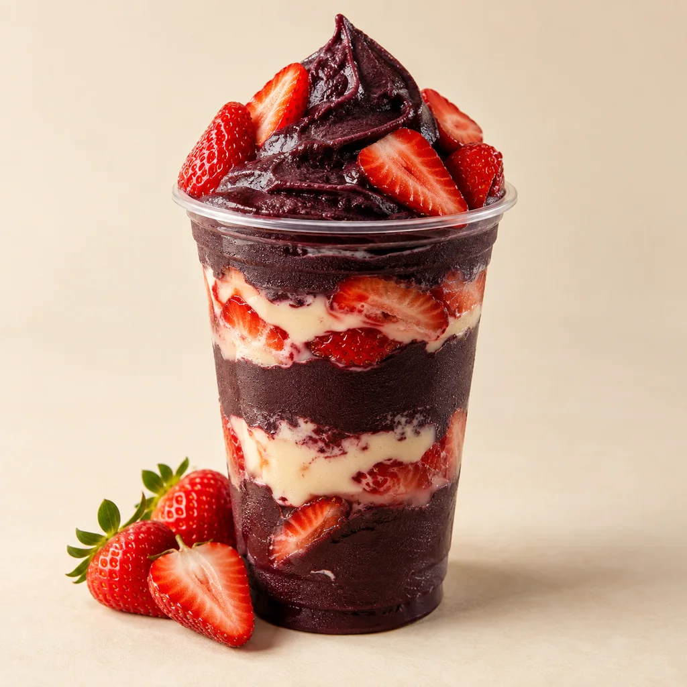
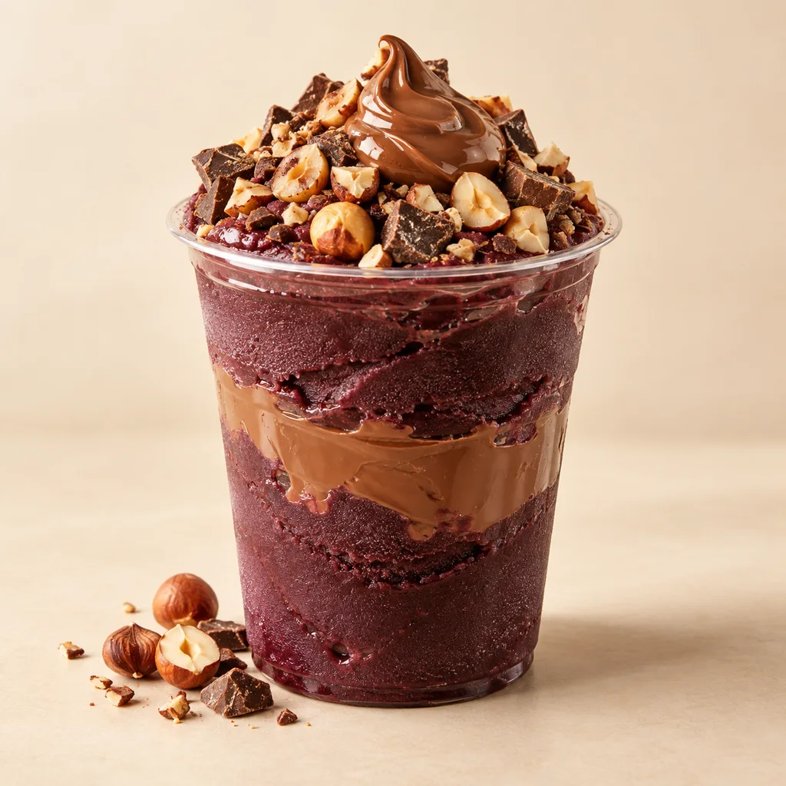

O CLÁSSICO

AÇAÍ + FRUTAS
Clássico do Vale
Uma combinação de açaí, banana, granola e um toque de leite condensado.
Quero esseUMA PAUSA COM SABOR DE AÇAÍ
Tem dias que tudo o que a gente precisa é de uma boa colherada. Encontre a combinação que tem a sua cara.
Seu pedido na plataforma externa. Simples assim.

ENCONTRE SUA COMBINAÇÃO
Frutado, crocante ou bem chocolatudo.
Tem uma ideia de sabor esperando por você.
Seleção demonstrativa · nomes, composições e imagens ilustrativos · sem preços

AÇAÍ + FRUTAS
Uma combinação de açaí, banana, granola e um toque de leite condensado.
Quero esseAÇAÍ + MORANGO
Açaí, morangos e creme. Uma ideia para quem gosta de uma pausa bem frutada.
Quero esse
AÇAÍ + CHOCOLATE
Açaí com creme de avelã, pedacinhos de chocolate e uma finalização crocante.
Quero essePRAZER, AÇAÍ DO VALE
Açaí do Vale é uma marca fictícia criada para apresentar uma ideia simples: transformar a vontade de um açaí em um momento gostoso do dia.
Frutas, cremes e complementos dão o tom desta proposta. Aqui você conhece os sabores; na plataforma de pedidos, escolhe a sua combinação.
Texto institucional demonstrativo. A história da empresa será inserida após aprovação.
O QUE INSPIRA A PROPOSTA
Diferenciais sugeridos para a marca fictícia; sujeitos à validação.
Uma vitrine que dá espaço às frutas, aos cremes e à vontade do momento.
Uma proposta de personalização com complementos escolhidos no cardápio externo.
Produtos e informações reunidos aqui, com um caminho direto para fazer o pedido.
DÁ VONTADE SÓ DE OLHAR
Texturas, cores e combinações.
Imagens criadas para ilustrar este conceito.
A vida pede
mais colheradas.
Imagens ilustrativas geradas por IA. Não representam produtos reais, porções ou embalagens da empresa pesquisada.
DA VONTADE À PRIMEIRA COLHERADA
Conheça os produtos e encontre sua combinação favorita.
O botão de pedido abre a plataforma externa da loja.
Confira opções, valores e disponibilidade diretamente na plataforma.
Os pedidos ainda não estão disponíveis neste template. O link da plataforma será ativado após a aprovação da proposta. Nenhum pedido ou pagamento é realizado aqui.
PERTINHO DO SEU MOMENTO
Este espaço reunirá as informações de atendimento confirmadas da loja.
ENDEREÇOEndereço a confirmar
Cidade / UF a confirmar
Dias e horários a confirmar
Delivery, retirada e área de atendimento serão informados após validação.A CONVERSA CONTINUA
Instagram e telefone serão adicionados após aprovação.